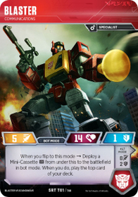

The next Alpha Trion Tournament has begun, and this time it's a Wave 3 through 5 only tournament (including the Blaster/Soundwave pack's character cards and the battle cards that are specific to that pack). The first round is complete, and rather than sharing a high level of the decks being played with only the players, I thought I'd share it with everyone.
As with last month's tournament, there are multiple tabs of data, and I hope that the column names are fairly self-evident. As the decks will not be public in this tournament until the end, I won't be showing the win ratios or links to the decks at this stage. I do however flag some intriguing items, and I thought I'd chat a little bit about some of those.
More Decks, More Diversity, But Mostly Wave 5
We have more players in this tournament, up to 37 decks this time for our review. We've a greater mix of types, though, there is a lot of Aggro/Pierce, or just plain Pierce. Given we're talking about Wave 3, 4 and 5, that's not a great surprise. Wave 5 dominates the characters. Not only do most (86%) of the decks include at least one Head, 82% of the character cards (138) are from Wave 5, leaving only 17 cards from Wave 4 and 13 cards from Wave 3.
Mr Popular
It's time to get Fangry
With great numbers of black battle icons comes a sudden adoration of Fangry. 59% of decks included a Fangry in their main deck, and one other deck put him on their sideboard. Fangry's 4 attack and Bold 2 mean that he can be a very efficient character, hitting for 5p5 on opening moves in a Pierce deck with a little Orange.
August's Supporting Stars
Four dominating
In addition to Fangry dominating this tournament's decks, Nightracer, Horri-Bull, and Quake, make up 56% of the non-Head character choices (61 out of 108). The odds look favourable for a 5-7 star Wave 5 Decepticon taking home the trophy.
The usual Heads
Health Heads
The Health Heads of Grax, Brisko, and Kreb continue to dominate the Heads, making up 73% (44) of the 60 strong Head field. Grax has dropped to being the least popular of the Heads, while it's pleasing to see Doomshot, Vorath, and Flameout showing up, in addition to the Bold Parsec and Clobber who showed up in the previous tournament.
The Power Cards
Battle Card Shifts
Many of the same battle cards are showing up in decks, however there were some big changes. Fusion Borer moves from being used in 14 decks to 31; RR Disruption Blade leaps from being used in 3 decks to 24 (Grenade Launcher surrogate you think?); and Hold the Line increased from 10 decks to 23. This latter change feels like a community recognition of how powerful that card is. Other notable increases were Escape Capsule, Magnetic Dysfunction Ray, Disassemble, and Pocket Processor.
There were a few cards that dropped out of favour, even with Wave 1 and Wave 2 being unavailable. Showing Off dropped in use, being dropped from nine decks (14 to 5). This seems very likely to be tied directly to the drop in Perceptor from 14 decks to 4. A more surprising change is the drop in use of Reflect Damage from being used in 12 decks to only being used by 4 decks. It is showing in sideboards more though, moving from 4 sideboards to 9, so it may be that folk were not finding that they needed it as urgently as they thought in July. The 7 Quake decks may disagree.
Vanishing Battle Cards
Despite folk not having Wave 1 and Wave 2 battle cards, eight Wave 3 to 5 battle cards dropped out of use from July to August. They were Decipher, Hiding Spot, Hijack, Involuntary Promotion, Special Delivery, Sturdy Armor, Toolbox, and Two-Pronged Attack. None of these are a great surprise, they were all only used by one player in the July tournament (not the same player though!).
Top of the Sideboard
The Unchanging Sideboard
The battle cards in the sideboards are not much changed. Holomatter Projector, Counterespionage, Belligerence, Tripwire and Decipher remain five of the top six most likely cards to be found in the sideboard. Speed Trap has been replaced with Disassemble, while End Hostilities and Reflect Damage seem to have been dropped from some main decks in favour of being sideboarded.
Classic Match-Ups to Hope for?
Lastly, let's look at the deck match-ups we might see.
Fortress Maximus vs Fortress Maximus
Fresh from being the winning deck in the last Alpha Trion tournament, Fortress Maximus is being played by two players this time. This is a first for the Alpha Trion tournaments and gives us the possibility of a first Fortress Maximus mirror match.

Will we see a rematch of the Blaster/Soundwave pack?
Let's all hope that we see Blaster and his Cassettes up against Soundwave and his Cassettes. As you can see, Soundwave has snuck in a Titan Master, will that be enough to overcome Blaster's normal Aggro dominance?
Some of our classics are returning...
We also have some Wave 3 and Wave 4 characters trying to muscle in. Two Octone decks, two Major Shockwave decks, and three Soundblaster decks will give us some older characters to support.
I hope all of that piqued your interest for playing in a competition. With the Vector Sigma Alpha Trions, Jason Crutchfield's tournaments on OCTGN, and the recent Team PTSD's Eye of the Matrix tournament, there are lots of options for online play opening up.